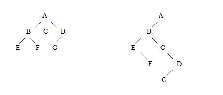
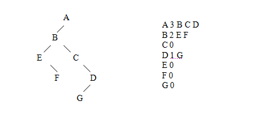

Nas árvores genéricas (não binárias) cada nó pode ter qualquer quantidade de filhos. Este fato inviabiliza a implementação de uma árvore genérica da forma feita para árvores binárias, pois não se sabe quantos ponteiros seriam necessários em cada nó.
A melhor solução é implementar a árvore genérica através de uma árvore binária na qual os ponteiros da esquerda e da direita têm significados diferentes. Ao ponteiro da esquerda atribuímos o significado de "filho" e ao da direita, o significado de "irmão". Como exemplo, a árvore genérica da figura abaixo à esquerda fica representada como no desenho abaixo à direita.
A estrutura de dados para a implementação dessa árvore pode ser definida da seguinte forma:
typedef struct nodo {Os dados de uma árvore genérica podem ser guardados em arquivo de várias formas diversas. Para os exemplos que seguem, utilizaremos o seguinte padrão: cada linha do arquivo inicia com o dado de um nó, seguido de um número inteiro que indica quantos filhos esse nó tem, e em seguida a relação de seus. A primeira linha do arquivo contém os dados da raiz da árvore. As linhas seguintes contêm dados de nós que já apareceram anteriormente como filhos de algum outro nó.
A árvore utilizada como exemplo anteriormente ficaria armazenada em um arquivo da seguinte forma:
Abaixo são examinados alguns dos algoritmos básicos que utilizam árvores binárias como árvores genéricas:
a) Construção de uma árvore genérica a partir do arquivo
Esta função constrói a estrutura de dados correspondente à árvore binária que representa uma árvore genérica, a partir de um arquivo que tem o padrão visto anteriormente. É utilizada aqui a função ProcuraG, que é idêntica à função de procura de um elemento já vista anteriormente (Procura).
void ConstroiG(arvoreG **eainicio) {b) Leitura de uma árvore, gerando a seqüência dos elementos utilizada para armazenagem em arquivos
Esta função faz o inverso da anterior. A partir de uma árvore dada em memória, ela gera e escreve na tela a representação da árvore, de acordo com a notação vista no item anterior. Em lugar de escrever na tela, a função poderia gravar a seqüência em um arquivo, armazenando a árvore.
Observe que, como o algoritmo utilizado é recursivo, o arquivo montado não necessariamente tem a mesma forma do arquivo original, mas mantém as mesmas regras de construção. Dessa forma, se o algoritmo de construção for aplicado a este arquivo, a árvore construída será a mesma.
void LeG(arvoreG **eainicio) {c) Remoção de uma sub-árvore composta por um nó e seus filhos
Esta função remove da árvore um determinado nó e todos os seus descendentes (filhos, netos, etc.). Ela utiliza a função ProcuraComAntG, idêntica à função de procura que marca o nó antecessor do nó procurado, vista anteriormente (ProcuraComAnt).
void RemoveNoEFilhosG(arvoreG **eainicio, char dado) {d) Inserção de um nó em uma árvore genérica
A função InsereG faz a inserção de um nó na árvore genérica. Para isso, ela deve receber como parâmetros o nó a ser inserido e o nó que vai ser o pai do nó inserido.
void InsereG(arvoreG *ainicio, char dadonovo, char dadopai) {